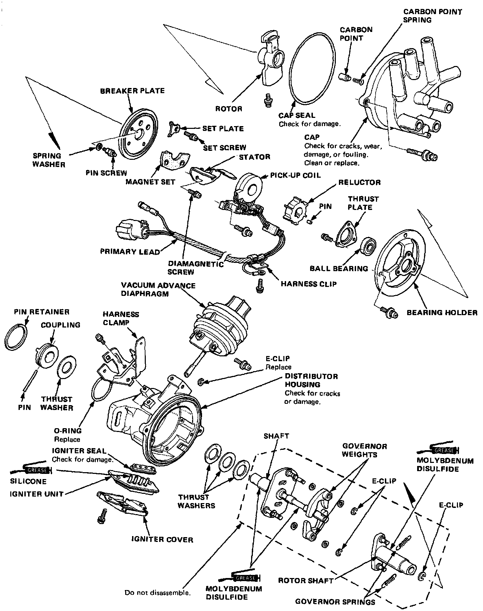
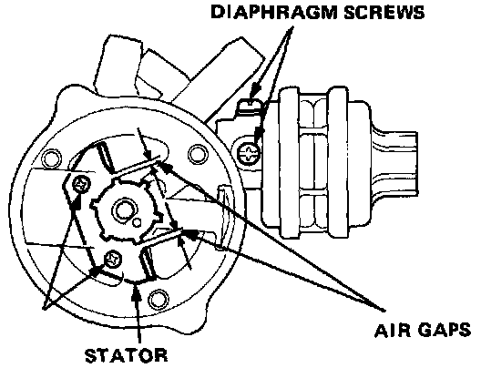
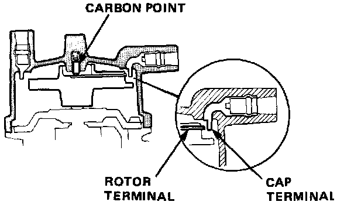
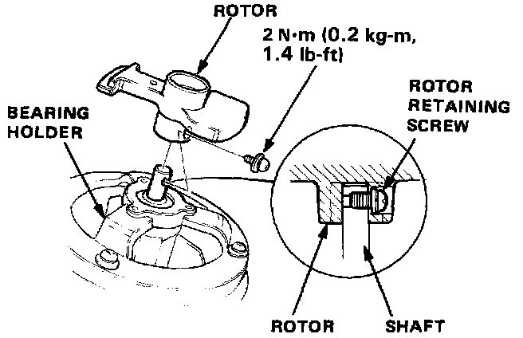
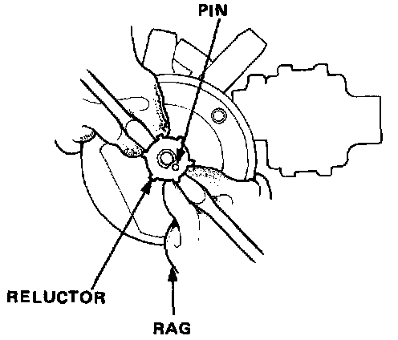
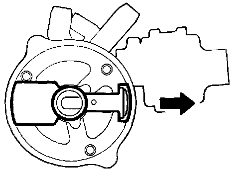
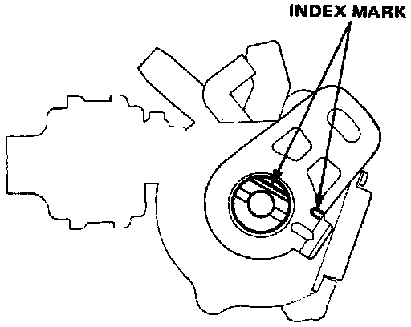

Distributor Overhaul - Sedan

Distributor Disassembly

Distributor Top End Inspection
1. Check to be sure that the air gaps are equal.
2. If necessary, back off the screws and move the stator as required to adjust.
NOTE: Before loosening the stator screws, remove the diaphragm screws.

3. Check for rough or pitted rotor and cap terminals.
4. Scrape or file off the carbon deposits.
Smooth the rotor terminal with an oil stone or #600 sandpaper if rough.
5. Check the distributor cap for cracks, wear and damages. If necessary, clean or replace it.

Rotor and Reluctor Replacement
1. Remove the rotor retaining screw and remove the rotor from the distributor shaft.
2. Remove the 3 screws, then remove the bearing holder from the distributor shaft by using a bearing remover.

3. Carefully pry up the reluctor by using two screwdrivers as shown. Do not damage the reluctor and stator.
4. When installing the reluctor, be sure to drive in the pin with its gap away from the shaft.
NOTE: The number or letter manufacturing code on the reluctor must always face up.
Reassembly
Reassemble the distributor in the reverse order of disassembly.

1. Install the rotor, then turn it so that it faces in the direction shown (toward the No. 1 cylinder).
2. Set the thrust washer and coupling on the shaft.

3. Check that the rotor is still pointing toward the No. 1 cylinder, then align the index mark on the housing with the index mark on the coupling.
4. Drive in the pin and secure it with the pin retainer.
5. After installing the reluctor, adjust the air gaps between the stator and reluctor.